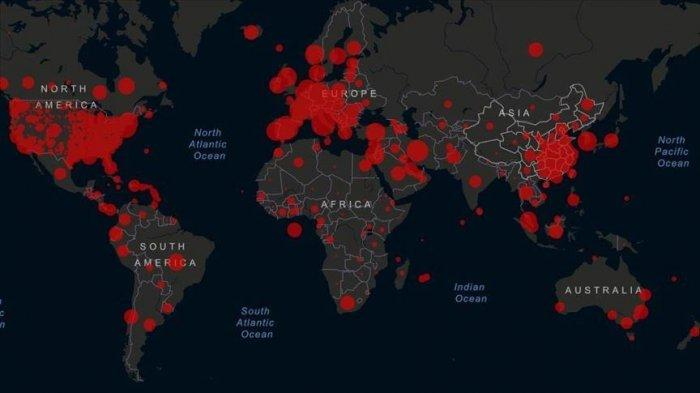

Update Corona Global: 2,3 Juta Kasus Positif, 595 Ribu Sembuh
Kasus pasien positif virus corona (COVID-19) di dunia mencapai 2.324.731 kasus, dengan 160.434 kasus kematian, dan 595.467 kasus berhasil sembuh per Minggu (19/4/2020) pukul 6:00 WIB.
China Daratan sebelumnya merupakan episentrum awal penularan yang memiliki kasus terjangkit paling tinggi di dunia. Namun dalam beberapa minggu terakhir, posisi tersebut direbut oleh Amerika Serikat dengan 736.790 kasus terjangkit, 38.920 kasus kematian, dan 67.438 kasus berhasil sembuh.
Posisi selanjutnya ditempati oleh Spanyol dengan 191.726 kasus terjangkit, 20.639 kasus kematian, dan 74.797 kasus berhasil sembuh. Kemudian ada Italia dengan 175.925 kasus terjangkit, 23.227 kasus kematian, dan 44.927 kasus berhasil sembuh.
Selanjutnya ada Prancis (151.793 terjangkit, 19.323 kematian, 35.983 berhasil sembuh); Jerman (143.342 terjangkit, 4.459 kematian, 85.400 berhasil sembuh); dan Inggris (114.217 terjangkit, 15.464 kematian, 414 berhasil sembuh).
Menduduki posisi ketujuh, China Daratan memiliki 82.719 kasus terjangkit, 4.632 kasus kematian, dan 77.029 kasus berhasil sembuh.
Data Update : 19 April 2020